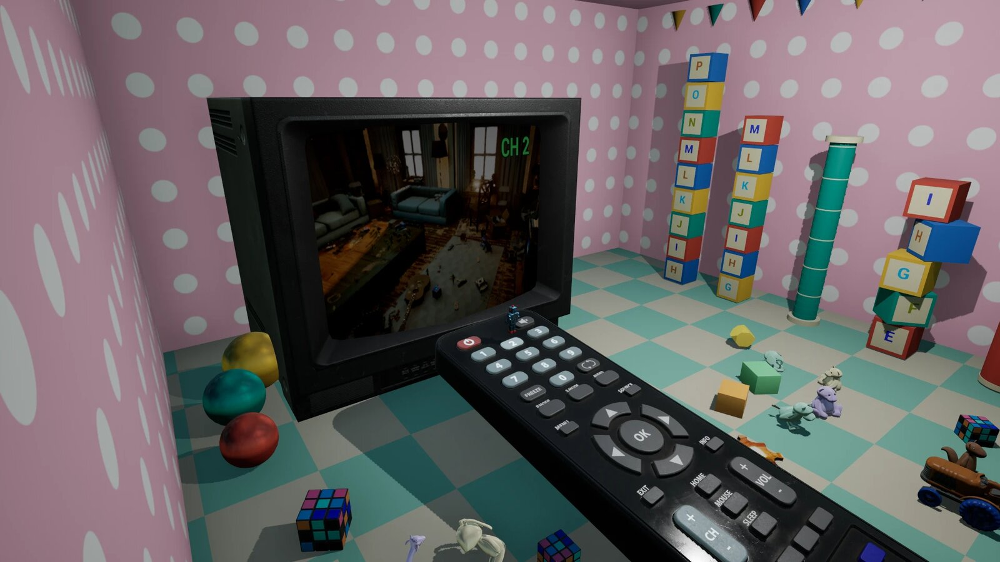

UE5.8 / C++
Toy or Not ?
凝視されたら動けない。人間とおもちゃの非対称オンライン対戦です。おもちゃは電池を集め、捕まった仲間を助けながら脱出を目指します。人間はおもちゃを見つけて箱にしまいます。
- 開発
- 3人チーム ／ 2026年9月から制作中
- 担当実装
- 寸劇とタイトル、観戦テレビ、画面比の判定、ボイスチャット、開発フロー
- 実装規模
- 担当C++ 約1万4千行 ／ 作品の自動テスト 約190本
- 公開状況
- Steamストア公開中 ／ 2027年2月発売予定
01
寸劇からタイトルへ
遊ぶ前に、おもちゃたちの事情を伝えたい。寸劇の最後にテディの目に寄り、タイトルへ切れ目なくつなぎます。

吹き出しが読みづらいという声を受け、セリフは画面下の字幕にまとめました。
- 通常再生
- 寸劇 → テディの目に寄る → タイトルへ
- スキップ
- 寸劇 → 最後のコマで停止
02
おもちゃ箱の観戦テレビ
捕まった仲間と同じ試合を見られるよう、大きなリモコンに乗って観戦先を替えるテレビを作りました。

箱の中の端末その番号の映像を描画
箱の外の端末観戦映像の描画を省略
03
凝視の判定範囲
判定はサーバーが確定します。担当した JudgeHalfAngles は画面比の上限を16:9とし、端末の申告値は判定を狭める方向にだけ使います。
16:9基準の判定範囲
21:9両端は黒帯。判定は16:9まで
4:3映っている幅まで判定を狭める
04
声で距離と役柄を伝える
距離と箱の位置に応じて聞こえ方を変え、人間とおもちゃの声を分けるピッチシフトを自作しました。
距離遠い相手の声は小さく
おもちゃ箱箱越しの声はこもる
役柄人間とおもちゃで声の高さが変わる
05
立ち上げと開発フロー
自分から立ち上げ、3人でSteamストアを公開。AIの支援を使い、仕様は自分で決めました。変更を理解して共有するため、/quiz を導入しました。
/quiz変更内容から4択を3問
合格してpush合格まで変更を送れない
GitHub ActionsPRで合格記録を確認
コードを読むquiz.yml